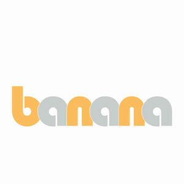

Trade Mark Journal No.2025/029 18 July 2025
UK00004223856 24 June 2025 (26)

- Class 26
- Hair clips; Hair curl clips; Clam clips for hair; Snap clips [hair accessories]; Claw clips [hair accessories]; Hair barrettes; Hair scrunchies; Hair twisters [hair accessories]; Hair slides; Tresses of hair; Hair (Tresses of -); Hair tresses; Hair tassel strings for Japanese hair styling (motoyui); Hair ribbons for Japanese hair styling (tegara); Hair elastics; Hair tassel ornaments for Japanese hair styling (negake); Hair pins; Pins for the hair; Hair fasteners; Bows for the hair; Hair bows; Plaits of hair; Plaited hair; Hair (Plaited -); Hair buckles; Hair pieces; Ponytail holders and hair ribbons; Hair ribbons; Ribbons for the hair; Hair ornaments in the nature of hair wraps; Hair extensions; Hair curlers; Hair rollers; Ornamental hair pins for Japanese hair styling (kogai); Hair curling pins; Sticks for use in styling the hair; Tabodome [hair pins for fixing back-hairpieces for use in Japanese hair styling]; Ornaments for the hair; Hair grips; Elastic for tying hair; Hair weaves; Waving pins for the hair; Hair netting; Hair grips [slides]; Slides [hair grips]; Elasticated hair ribbons; Hair coloring foils; Hair bands; Bands for the hair; Bands (Hair -); Hair nets; Nets (Hair -); Hair colouring caps; Fibres for use as replacement hair; Hair decorations; Oriental hair pins; Hair coloring caps; Grips for the hair; Hairpieces for Japanese hair styling (kamishin); Hairpieces for Japanese hair styling [kamishin]; Rubber bands for hair.
F&Z BROS LTD